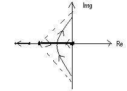

7.9.1: Title of the experiment: Root locus with compensation, using MAT LAB software.
7.9.2: Aim of the experiment: Plotting of Root Locus with compensation for
the given transfer function and verification using theoretical calculations, Using MAT
LAB software.
7.9.3: List of equipments required to conduct the experiment with their
Specification:
Pentium based PC and MATLAB software version 5.1 or 6.1
7.9.4: Experimental setup with naming of all parts: ---- Not required ------
7.9.5: Theoretical background for the experiment/validation of the experiment:
In any closed loop system the movement of closed loop poles with small changes in the parameters of the system greatly helps in the design of any closed loop system. Such movement of poles can be known by the root locus method. Practice of this provides a graphical method of plotting the locus of the roots in the S-plane has a given system parameter is varied over the complete range of values. The roots corresponding to a particular value of the system parameter can be located on the locus. The value of the parameter for a desired root location can be determined from the locus. This technique brings into focus the complete dynamic response of the system. The locus also provides a measure of the sensitivity of roots pf the variation in the parameters.
7.9.6: Design: ---- Not required ------
7.9.7: Procedure to carry out the experiment:
This program is entered,
% -Root locus plot -------
% numerator and denominators of the
% uncompensated systems
num = [0 0 4 ];
den = [1 2 0] ;
% numerator & denominators of compensated
% systems
numc = [0 0 1 2.9 ] ;
denc= [1 7.4 10.8 0 ];
% Enter root locus command & plot root loci
r = locus (num... den )
Plot (r, ‘- ‘)
hold
r= rlocus (numc, denc )
Plot (r, ‘ - -‘ )
% axis scaling
v = [- 4 4 - 4 4 ];
axis (v)
grid
title (“Root locus of compensated and uncompensated system “)
7.9.8: Table of observation: ---- Not required ------
7.9.9: Specimen calculations:
G(s) = 4____
S(s+2)
The closed loop T. F becomes
C(s) = 4______
R(S) S2+2S+4
1
= ---------------
(S+1=j√ 3)(S+1-j√3)
The closed poles located at
S= -1 + j√3
-
The original system has open loop T.F G(s) then compensated system will have T .F
S+1/ τ
gc(s) G(s) =( Kc -------- ) G (S) 0< α <1
S + 1/ α
-----------------
Gc (S)
At desired closed loop pole the T.F G(s) having angle
: 4
------ = -2100
S(s+2)
s = -= + j2√3
Thus if we need to & force root locus to go through the desired closed loop pole .
The lead compensator must contribute Φ= 300 at this point
Zero at S=-2.9 pole=5.7
1 1
T= ----- α T = ------ = 0.176
2.9 5.7
1
=O.345 α = -------- =0.508
5.7x0.345
then open loop transfer function is
Kc(S+2.9) 4
Gc(s)G(s)= ------------- --------
S+5.7 ( S+2)S
K (S+2.9)
Gc (S) G(S) = -----------------
S(S+2) (S+5.7)
Where K = 4 Kc
K can be evaluated by
K (S+2.9)
--------------
S (S+2)(S+5.4)
S=2+ j√3(2)
-
K=19.59
19.6 ( S+2.9)
;Gc (s) G(s)=---------------
S(S+2)(S+5.7)
Kc of the lead compensator is
Kc =19.6 = 4.9
4
The lead compensator T.F becomes
Gc(s)=2..48 0.345S+1 = 4.86 (S+2.9)
0.176+1 (S+5.68)
The static velocity error constant Kv is obtained from the expression
Kv= lim SGs (s) G(s)
S->0
= lim S 19.6 (S+2.9)
S->0 S(+2) (S+5.7)
= 4.98
= 5sec-1
7.9.10: Plotting of Graph:

7.9.11: Discussion and conclusion:
From the above experiment it has been observed that MATLAB will take less computational time for the root locus compensation.